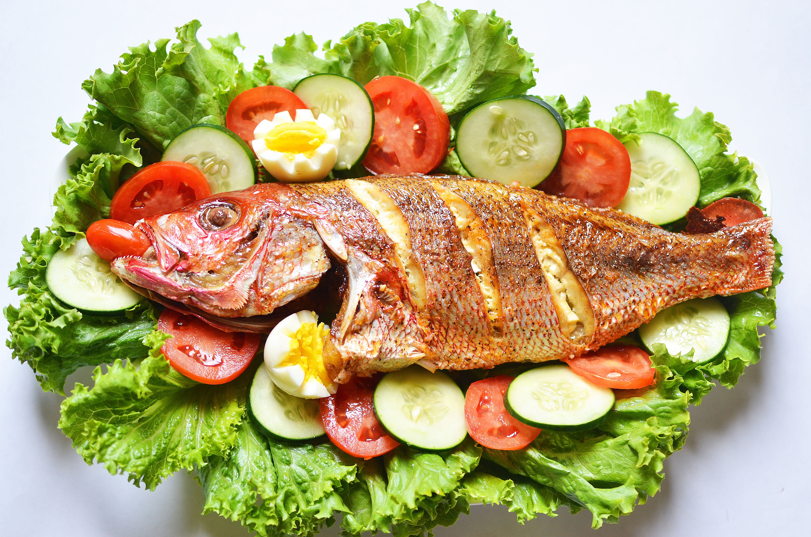
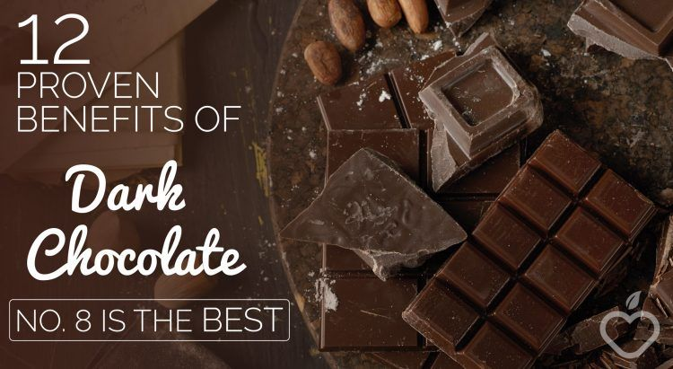
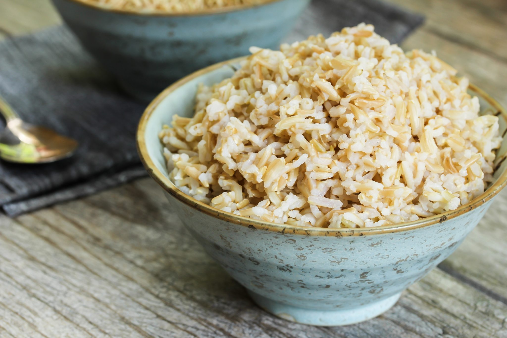

Patrick
Lambda School
HTML/CSS homework
My favorite food is Fish Salad. Roast Red Snapper tastes good with salad.
Usually, the salad are made up with fresh romaine lettuce, tomatoes, cucumbers and avocado.
This has been my favorite because of its source of proteins and nutrients.
My second favorite food is Dark Chocolate. Chocolate contains cocoa,
which is rich with antioxydant and other health benefits.
According to research, dark chocolate can help its eaters have a healthy heart.
My third choice is Brown Rice because of its low-carb diet that boost energy through your body.
Favorite Restaurant near me
-
Fish salad

- Dark Chocolate
Dark Chocolate

- Brown Rice
